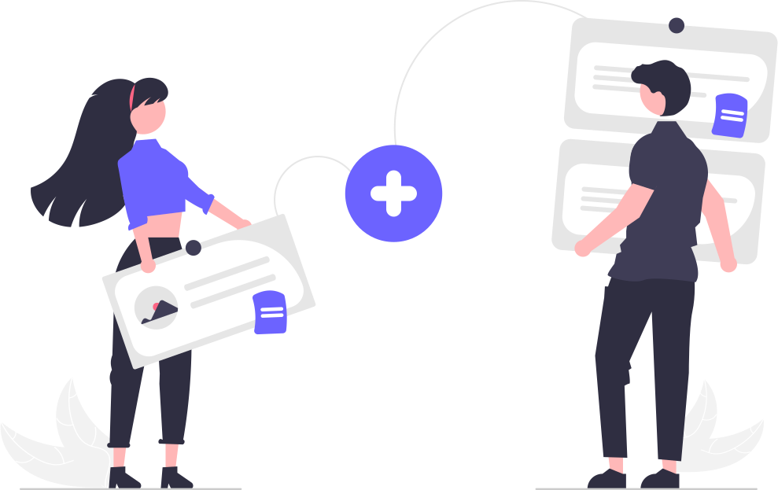

NGO SECTION
Welcome to our website that connects NGOs with passionate volunteers!
Our platform aims to bridge the gap between NGOs and individuals who want to make a difference in their communities. We understand that NGOs need a constant supply of volunteers to carry out their projects and initiatives successfully. At the same time, there are many people out there who want to give back to society by volunteering their time and skills.
Our platform provides an easy-to-use interface that helps NGOs create volunteer opportunities and attract potential volunteers. NGOs can create a profile on our website and post their volunteer requirements, along with the specific skills and qualifications they are looking for. Volunteers can search for opportunities based on their interests, skills, location, and availability.
As a volunteer, you can browse through the different opportunities available on our website and apply for the ones that match your interests and availability. You can also create a volunteer profile that highlights your skills, interests, and past volunteer experience, making it easier for NGOs to find you.
Our platform also offers tools to help NGOs manage their volunteers effectively. NGOs can track volunteer hours, send updates and reminders, and provide feedback to their volunteers through our platform.
We believe that volunteering is a powerful tool for creating positive change in society. By connecting NGOs with passionate volunteers, we hope to create a more engaged and compassionate community.
Join our platform today and start making a difference in your community!
VOLUNTEER SECTION

As a volunteer, you can browse through the different opportunities available on our website and apply for the ones that match your interests and availability. You can also create a volunteer profile that highlights your skills, interests, and past volunteer experience, making it easier for NGOs to find you.
Our platform also offers tools to help NGOs manage their volunteers effectively. NGOs can track volunteer hours, send updates and reminders, and provide feedback to their volunteers through our platform.
We believe that volunteering is a powerful tool for creating positive change in society. By connecting NGOs with passionate volunteers, we hope to create a more engaged and compassionate community.
Join our platform today and start making a difference in your community!